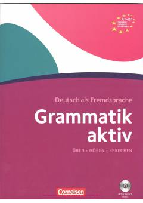

GANemis tili grammatikasini A1-B1 darajada o'rganish uchun qo'llanma.
Ushbu qo'llanma nemis tilini A1 dan B1 darajasigacha o'rganuvchilar uchun mo'ljallangan bo'lib, grammatik qoidalarni tushuntirish va ularni mustahkamlash uchun mashqlarni o'z ichiga oladi. Kitob til o'rganuvchilarga grammatikani amalda qo'llash ko'nikmalarini rivojlantirishga yordam beradi. Materiallar bosqichma-bosqich murakkablashib boradigan tuzilishga ega.